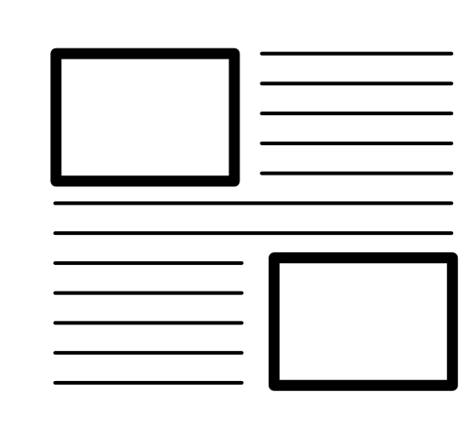
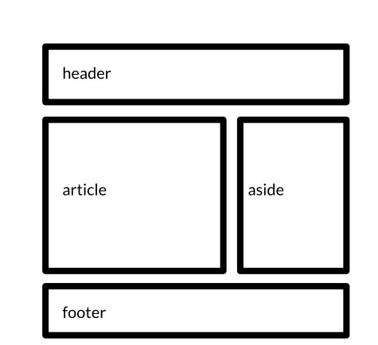
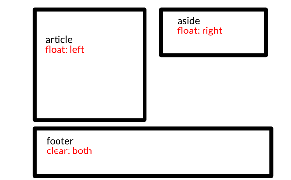
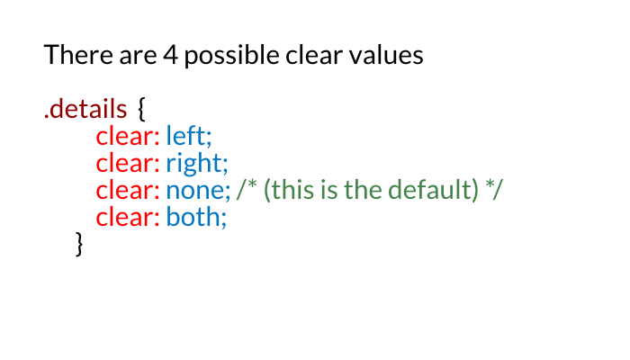
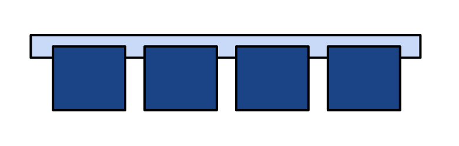

Class 4: Layout
Evan Wallace
Senior Software Developer - Berkley Insurance Australia
Learning Objectives
Review the DOM Tree elements from header to footer
Apply header, footer, single column & multi-column layouts to develop a web page.
Experiment and predict effects of floats and clearing CSS positioning.
Agenda
HTML5 Structural Elements
Floats & Clears
The display CSS property
Lab time: Layout challenge
Review Questions
What makes up the box model?
How do we select a direct child using CSS?
Name one of the file name conventions?
HTML 5 Structural elements
Semantic Tags: Header tag
Header of a web page or section of a web page
Can have multiple headers on a page. Example - each article on a blog site may use the header element
Semantic Tags: nav tag
Links to navigate around the website
Semantic Tags: footer tag
Specifies the footer area for a document or section
Footer for the website typically contains author and copyright info
Can have multiple footer on a page (similar to the header example)
Semantic Tags: Section
Specifies a section of the document
Defined as a grouping of content typically with a header
Semantic Tags: Article
Similar idea to a section - Group of similar content
Should make sense on its own and should be possible to be read independently from the rest of the website
Semantic Tags: Aside
Defines some content aside from a main block of content
The aside should be related to the surrounding content
Aside example
Non-Semantic Tags: div
A group of content
Gives no indication of what type of content it should contain
Document Flow
The document flow describes the way HTML elements are rendered
Understanding the flow helps us better understand things like width and height
When we understand the default behavior we can write code that works with it instead of fighting against
it
Display
Display determines the type of rendering box a particular element uses
Can other elements sit next to it?
Can you set widths and heights?
Does padding and margin work?
Display: Block
p { display: block; }
Element displays on a new line
Will stretch out to the right and left as far as possible
Nothing can sit on the same line as it
Widths, heights, margin and padding all work
Display: Inline
p { display: inline; }
Does not disrupt the flow of other elements
Will sit next to any element it can (not blocks)
Padding works - Does not push elements away vertically
Margin works horizontally
Widths and heights dont work at all
Display: Inline-Block
p { display: inline-block; }
A mix of inline and block
Other elements can sit in the same line
You can set widths and heights
Margins and padding works perfectly
Display: None
p { display: none; }
Removes element from document flow
Wont render (invisible in browser)
All other elements act as if it was never there
Code Along: Document Flow
What are floats?

Elements with the float property
Remain in the document flow
Can be pushed left or right
Allows other content to flow around them
What can we do with floats?

Beyond just wrapping text
Building full page layouts
Build smaller sections of a page (nav, footer etc)
Problem with floats
Once you have floated something, everything after it in the document flow will float up and try and fill whatever
gap there is
Problem with floats
Using the CSS clear property we are able to return to the normal document flow

Clear values
Clearing is drawing a line and saying things can't float past this point

Collapsing Parent
If everything inside an element is floated, that element will have a height of zero

Unless you
clear it
Clearing Techniques
The Empty Div Method
The Overflow Method
The Clearfix Method
Empty div method
Adding an empty element to your HTML that has clear both attached to it. Add it wherever you need to stop
the floats
.clear {
clear: both;
}
Overflow method
Add overflow auto or overflow hidden to the parent element that contains all of the floats. This will force
the element to care about floated elements
.clearfix {
overflow: auto;
}
Clearfix method
Use the clever :after CSS pseudo-selector to clear the floats. This pseudo-selector adds content to the page,
and you can style that content to have clear both
.clearfix:after {
content: "";
visibility: hidden;
display: block;
clear: both;
}
Code Along: Floating Sections
www.codepen.io/evkw - Floating Sections
lab time: Layout Challenge
What we covered today
Looked at the various structural HTML5 tags
Talked about semantic vs non-semantic tags
Dived into floats and clears
Practiced Creating some popular web layouts
Homework
Finish off Relaxr
Keep working on the layout challenges
Next Class
Layout Lab
Review floats & clears
Talk about Flexbox
Practice CSS Layouts